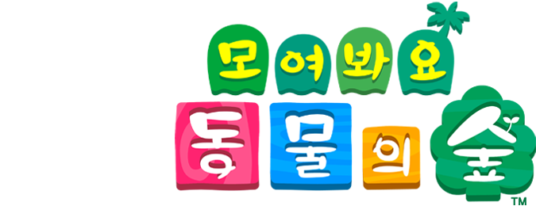

Animal Crossing
: New Horizons
게임 소개
무인도에서 시작하는 새로운 생활 현실과 동일한 시간이 흐르는 세계에서, 마음 가는 대로 하루하루를 보내는 「동물의 숲」 시리즈. 낚시나 곤충 채집, 가드닝 등 집 밖에서 즐길 수 있는 요소부터 집 꾸미기・패션까지, 다양한 취미를 1년 내내 즐기실 수 있습니다. 「모여봐요 동물의 숲」에서는 「Nook Inc.」에서 제공하는 「무인도 이주 패키지 플랜」에 참가하여 무인도로 이주, 하나하나 내 손으로 꾸려 나가는 새로운 생활이 시작됩니다. 물론 무인도에서 무엇부터 시작하면 좋을지 막막한 당신을 위해 「Nook Inc.」가 꼼꼼하게 지원해드릴 예정이니 걱정 마세요! 함께 이주한 동물들과도 다양한 교류를 통해 친해질 수 있습니다. 생활에 필요한 도구나 가구는 나뭇가지나 돌멩이 등 섬에서 구할 수 있는 것을 재료 삼아 DIY(Do It Yourself)로 직접 만들 수 있습니다. 가구는 실내뿐 아니라 실외에 배치할 수도 있습니다. 마음 가는 대로 섬을 꾸며 보세요. 이번 「동물의 숲」에서는 같은 섬의 주민끼리 최대 4명이 동시에 플레이할 수 있습니다. 인터넷/로컬 통신으로는 본인 또는 친구의 섬에 모여서 최대 8명이 함께 플레이할 수 있습니다. 365일 다양한 표정을 보여주는 이 섬에서 느긋하게 지내도 되고 열심히 살아도 됩니다. 당신은 어떤 생활을 꿈꾸고 계신가요?
더 알아보기...플레이 소개
섬에서 각종 생물과 재료를 수집하고 무언가를 만들고 주민들에게 말을 거는 등의 다양한 활동을 하여 특수 화폐인 '너굴 마일'을 획득하여 무작위 섬으로 투어를 가 보세요! 섬 투어 뿐만 아니라 각종 DIY레시피와 인벤토리 확장권, 추가 헤어스타일 등 다양한 아이템을 구매할 수 있습니다. DIY레시피를 획득하면 다양한 가구와 물건들을 직접 제작할 수 있습니다. 또 더 다양해진 곤충, 물고기, 화석들을 계절별로 모아 생물 도감을 완성시켜보세요. 모여봐요 동물의 숲은 현실 시간과 동일하게 흘러가는 리얼 타임 게임입니다. 평화로운 무인도 생활을 즐기며 나만의 섬도 꾸며보세요. 또 다양한 주민 친구들과 즐거운 시간도 보내세요. 닌텐도 스위치 온라인을 이용해 다른 사람의 섬에 놀러갈 수도 있고 직접 만든 디자인도 공유할 수 있어요! 돌아오는 7월 3일 여름 업데이트로 수영 기능도 추가되었어요. 기대되지 않으신가요?
더 알아보기...직접 플레이 해 본 소감
몇 년 동안 기다리고 기다리던 동물의숲 스위치버전 모여봐요 동물의 숲이 나오자마자 바로 구매했다. 학교 개강이랑 겹쳐서 열심히 플레이한 시간은 일주일정도 밖에 안되었다. 내 섬 이름을 무엇으로 지을까 고민하다가 주섬주섬이라고 지었따. 전작보다 더 다양해진 게임 요소와 스토리 진행, 눈에 띄게 발전한 그래픽들에 시간가는 줄 모르고 플레이 했던 것 같다. 리얼 타임이라 조금 답답했지만 시간을 돌리는 버그는 참고 안쓰기로 다짐했다. 무인도 이주 패키지를 진행하는 너굴이에게 대출을 받아서 집을 짓고 그 빚을 갚기 위해 열심히 낚시를 했다. 낚시대에 물고기가 잡힐 때마다 진동이 울려서 생동감 있고 좋았고, 시간대별, 날씨별, 위치별로 나오는 물고기의 종류가 달라서 생물 도감을 완성시켜나가는 재미도 있었다. 플레이를 진행하다 보니 새로운 동물 주민도 이사를 오기 시작했는데 내가 모으고 싶었던 귀여운 주민들이 아니어서 실망했다. 그리고 마침 학교 개강으로 공부를 위해 잠시 게임을 접어두고 안하고 있었는데 이번에 여름 업데이트가 나온다고 해서 매우 기대 중이다. 아직 모동숲을 안해본 사람이 있거나 방학 떄 게임을 추천해달라고 하는 사람이 있다면 나는 무조건 모여봐요 동물의 숲을 추천할 것이다!
플레이 사진 보기...